Photo mood journal · Android
A mood journal made of photographs.
Give the day a colour. Shoot it on one of 24 cameras. Weeks later the month is a grid you can read without a word of it.
No account, no server, no cloud sync. Nothing you write or shoot leaves your phone.
One square a day. The empty ones are the point — a gallery cannot draw the days you did not write.
A diary worth reopening
Most mood trackers record a day as an emoji and a line of text, and there is nothing to come back to. This one records it as a photograph.
Give the day one of seven colours, add a note if you want to, and weeks later the timeline is a grid of colour — the shape of a month, readable without a word of it. A day can be recorded with no photograph at all, and many are.
It never nags
Nothing here is a target, and nothing here is a verdict.
- A streak that cannot go down Miss a day and it is forgiven, twice a month. Today never counts against you, because the day is not over.
- One reminder, and it reads the room Once a day, and it skips a day you have already recorded. A colour on its own is enough. Turn it off and nothing chases you.
- Insight counts. Only counts. No score, no trend warning, and no advice about your own life.
24 cameras, not 24 filters
Every photograph below was made by the camera it sits under, through the same render chain that runs on the phone. Each look is built per shot — grain, halation, lens softness, vignette — rather than stamped over a finished image.
Gold Hour Free
Warm and nostalgic — made for late afternoon light
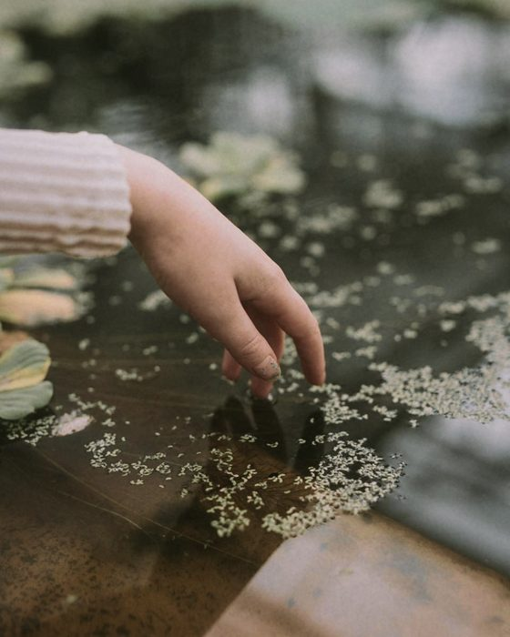
Soft Portrait Pro
Soft skin, low contrast, quiet colour
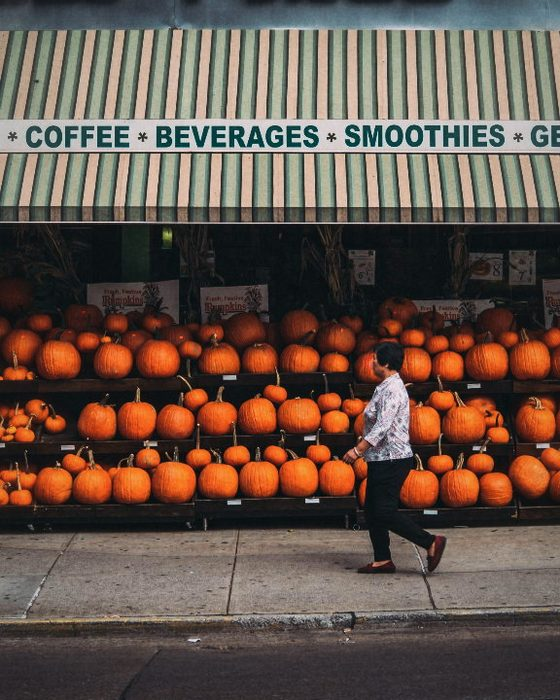
Everyday Pro
Cool greens, everyday snapshots
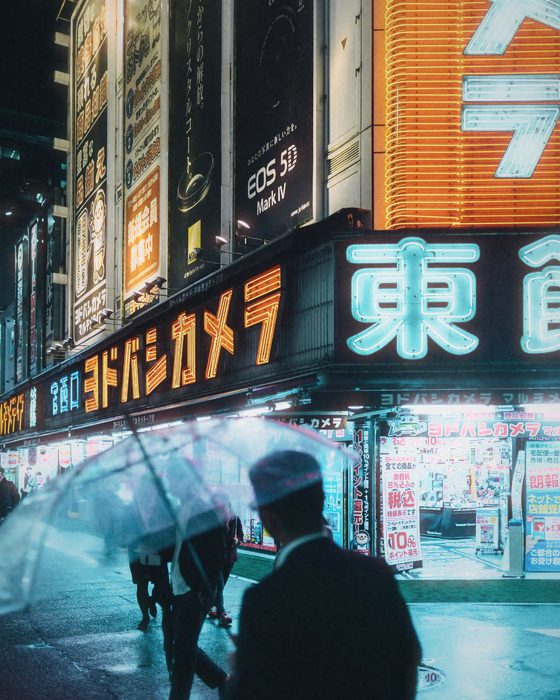
Tungsten Night Pro
For warm indoor light — shadows fall teal
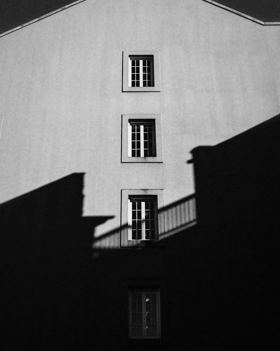
Mono Grit Pro
Black and white, coarse grain, hard contrast
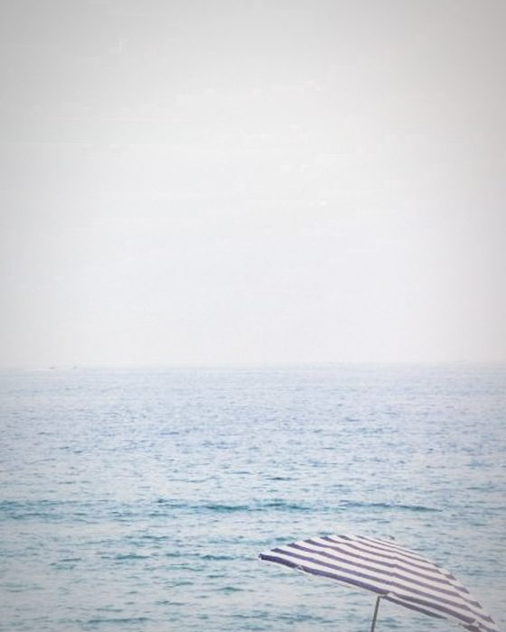
One-Shot Pro
Single-use camera — heavy vignette, 27 frames
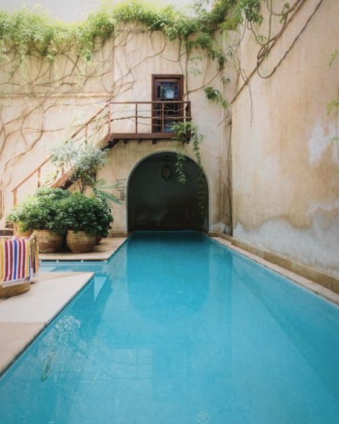
Pocket '96 Free
90s compact — neutral, slightly cool
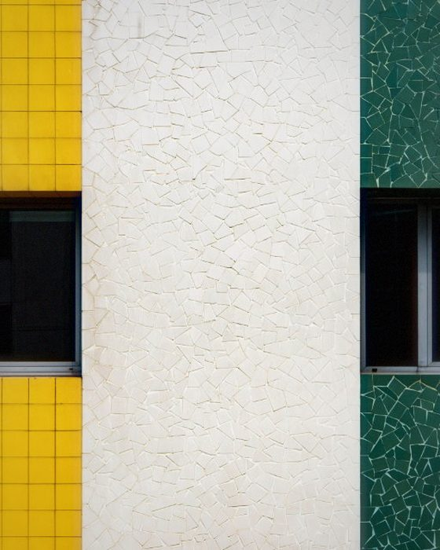
CCD '03 Free
Early-2000s digicam — punchy, saturated, a little harsh
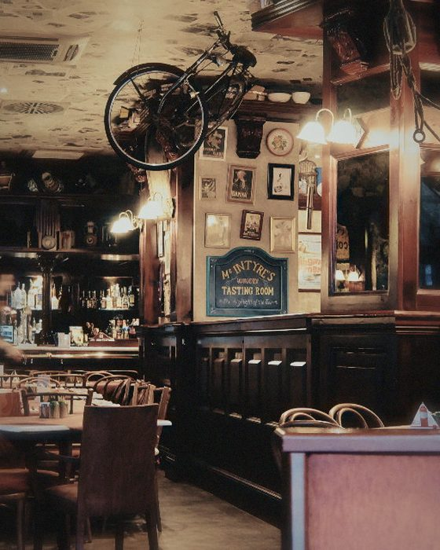
Handycam Pro
Flat, greenish, old video tape
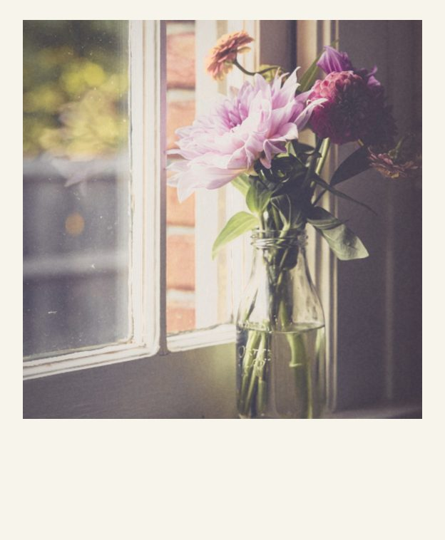
Instant Square Pro
White border, lifted blacks, instant film
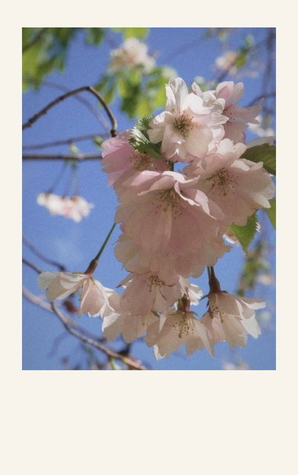
Instant Mini Pro
Bright, soft, a hint of pink
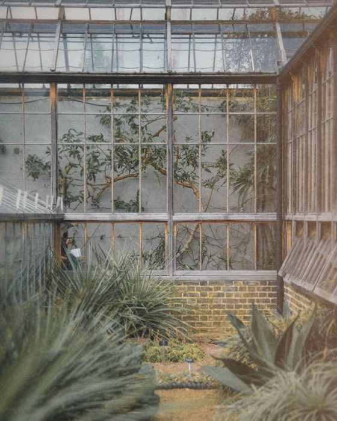
Expired Roll Pro
Faded, colour-shifted, light leaks
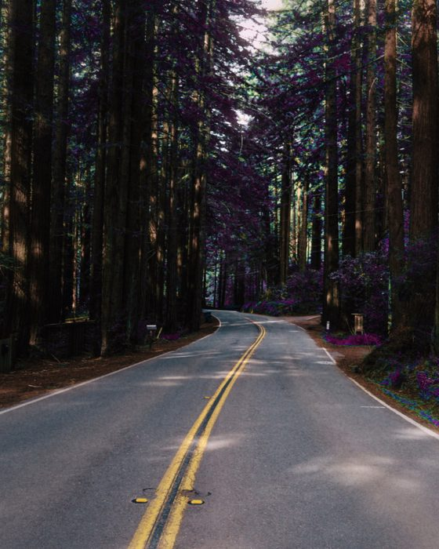
Infra Pink Pro
Leaves come back pink — for parks, trees, anything green
Silver Bleach Pro
Colour drained, blacks deep — hard light suits it
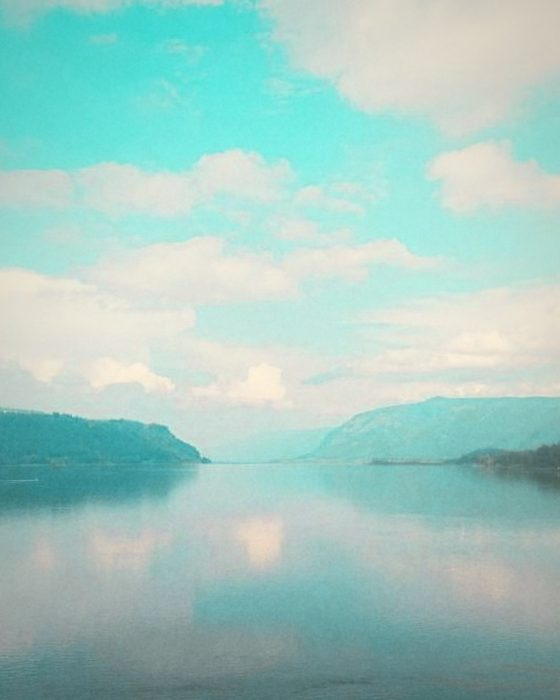
Cross Lab Pro
Developed in the wrong chemicals — cyan shadows, 36 frames
Slide 64 Pro
Dense colour, deep blacks — give it good light
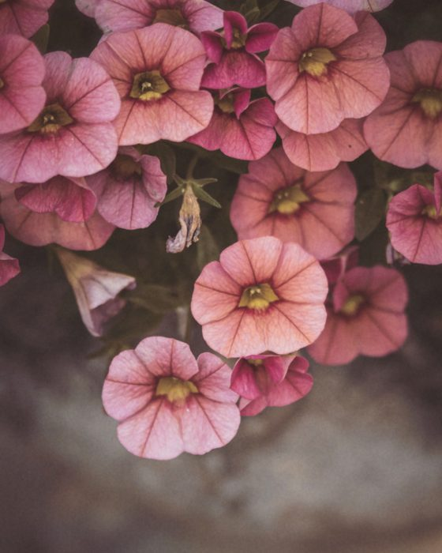
Pale Wash Pro
Muted and matte — the quiet one
Taiga Pro
Muted colour, blue-green foliage
Arizona Pro
Soft desert warmth, turquoise skies
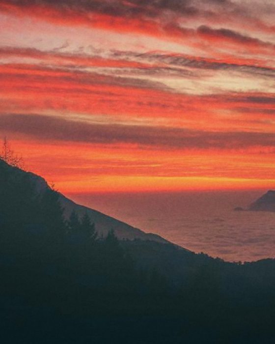
Calypso Pro
Summer blues and sunlit oranges
Cine Pro
Orange light against teal shadows
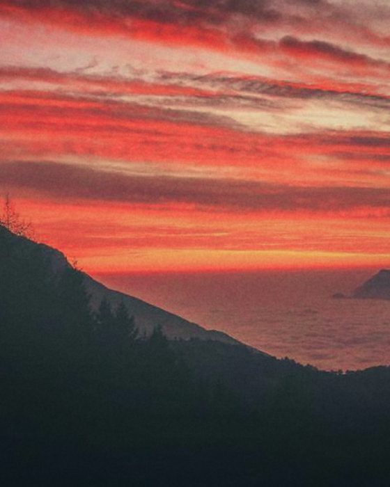
Apollo Pro
Rose reds for the last light
Vista Pro
Clear greens and open blue skies
Chrome Pro
Dense colour with violet shadows
24 cameras
The camera behaves like a camera
Three settings under the shutter and no menu behind them.
- Auto · Portrait · Double exposure One frame with the lens set for you, one frame with the aperture ring in your hand, or two frames on one negative with seven ways for the two to meet.
- The border is part of the picture Keep the one the camera prints, or put every photograph inside a square instant, a mini instant or a 35 mm film strip. The viewfinder reframes to match.
- Rolls that run out The single-use camera gives you 27 frames before you load a new one. The early digicam shoots at its own small sensor size, so the softness is in the picture instead of on it.
- Hand a camera to somebody Send any of them as a short code or a small file, including one you built yourself. Opening one costs nothing and needs no subscription, on any tier.
The camera is a Quick Settings tile too, so the viewfinder is one tap from the notification shade.
Your diary stays on your phone
Your photos, moods and notes never leave this phone. There is no account, no server, and no cloud sync — and the diary is excluded from Android's automatic Google Drive backup, which is on by default for most apps.
Moodroll does not measure how you use it. There is no usage analytics in the app at all — not which screens you open, not which cameras you use, not whether you bought anything. Crash reports do go to Google Firebase, so that bugs can be found and fixed on phones we cannot hold; they never contain a photograph, a note, or which mood you tagged. No advertising identifier is collected.
Location tagging is off by default. Switch it on and the coordinates are written into the photograph's own file, on your phone — they are never uploaded, and a PNG export carries none.
All of it is written out in full, in plain language, in the privacy policy.
No ads. Not now, not later.
What Pro adds
Three cameras are free forever, at full quality — not weakened versions, but three of the 24.
- All 24 cameras.
- Build your own camera. Pick the film, the grain, the lens, the border, and how many frames the roll holds. Give it a name.
- Record a day straight from the home-screen widget, in two taps, without opening the app.
- A second widget that keeps your latest photograph on the home screen, with its mood and the camera that took it.
- App lock, with your fingerprint or your screen lock.
Available as a monthly or yearly subscription, or as a one-time purchase. Prices, and any free trial you are eligible for, are shown in the app.
The free tier keeps your whole diary. Every day you record stays, and stays visible — nothing is hidden behind the price, and nothing is ever deleted.
Requirements
Android 7.0 or newer, and a camera. The camera and the diary work with no connection at all.